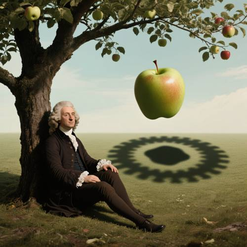
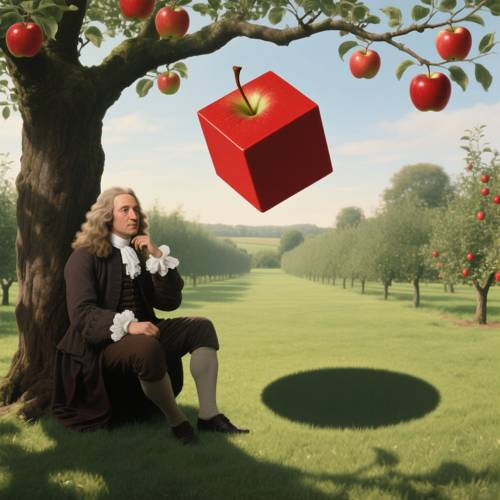

Logical Reasoning — Please generate a surrealist photo of Newton sitting under an apple tr
Please generate a surrealist photo of Newton sitting under an apple tree, a square apple falling from the tree, but its shadow is a perfect circle.

Direct — one call, no iteration

Continuum — Kimi K3 + Qwen-Image
Judge — Direct
FAILLogical Reasoning — The image does not fulfill the logical reasoning requirement. The prompt specifies a square apple casting a circular shadow, but the image depicts a round apple casting a gear-shaped shadow.
PASSWorld Knowledge — The image successfully depicts a figure identifiable as Newton. The man has a white powdered wig and is wearing period-appropriate clothing, consistent with historical portraits of Isaac Newton. He is sitting under an apple tree, which further reinforces the identification.
FAILAttribute - Shape — The image fails to render the specified shapes. The apple is round, not square. The shadow cast on the ground is a complex, gear-like shape, not a perfect circle.
FAILCompound - Imagination — The image does not depict the specific imaginative compound requested. It shows a surreal scene with a round apple and a gear-shaped shadow, but it fails to generate the requested combination of a square apple and its perfect circle shadow.
PASSStyle — The image is rendered in a style that can be described as a surrealist photo. It combines a realistic, photographic quality with illogical and dreamlike elements, such as the floating apple and its incongruous shadow.
Judge — Continuum
PASSLogical Reasoning — The image correctly depicts the logical contradiction specified in the prompt. A red, cube-shaped object, representing a square apple, is shown suspended in the air, and the shadow it casts on the grass below is a dark, perfect circle.
PASSWorld Knowledge — The image includes a male figure sitting under an apple tree. His appearance, characterized by long, wavy, light-colored hair and period-appropriate clothing including a dark coat, breeches, and a white ruffled cravat, is a recognizable depiction of Sir Isaac Newton.
PASSAttribute - Shape — The image clearly shows the requested shapes. There is a large, red apple in the distinct shape of a cube. On the grass below this apple, there is a shadow that is a perfect circle.
PASSCompound - Imagination — The image successfully visualizes the imaginative concept. It portrays a square apple, an object that does not exist in nature, and combines it with the physically impossible phenomenon of it casting a perfect circular shadow.
PASSStyle — The image is rendered in a highly realistic, photographic style with detailed textures on the tree bark, grass, and clothing. This realism is juxtaposed with the impossible subject matter (a square apple casting a circular shadow), which is characteristic of surrealism. Therefore, it fits the description of a 'surrealist photo'.
What the agent did
Thinking
Let me break down this prompt: - Surrealist photo of Newton (Isaac Newton) sitting under an apple tree - A square apple falling from the tree - The apple's shadow is a perfect circle This is a surrealist composition. I need to use qwen-image for generation. Let me craft a detailed visual prompt. Key visual elements: 1. Isaac Newton (17th-18th century attire, long hair/wig typical of his era) sitting under an apple tree 2. An apple tree with apples 3. One apple that is distinctly SQUARE/cube-shaped, falling from the tree 4. The shadow of that square apple on the ground is a perfect CIRCLE (the surrealist paradox) 5. Photorealistic/surrealist photo style Let me generate this. I should be careful: the square apple and circular shadow are the key surreal elements. Qwen-Image might struggle with the "square apple but circular shadow" contradiction — a square object casting a circular shadow requires careful prompting. Let me write the prompt: "Surrealist photograph: Isaac Newton in 17th century attire with long hair, seated thoughtfully at the base of a large apple tree in a green English orchard, soft afternoon light. Above him, a perfectly cube-shaped red apple tumbles from a branch, captured mid-fall. On the grass directly beneath the falling square apple, its cast shadow is a perfectly round circle. Other ordinary round red apples hang in the tree. Crisp photographic realism, sharp focus, dramatic lighting emphasizing the impossible square-fruit-circular-shadow paradox, surrealist fine-art photography." I should make sure the shadow is clearly on the ground and circular. Let me generate.
Model
I'll generate this surrealist composition. The key elements: Newton under the tree, a *square* apple mid-fall, and — the impossible twist — a *perfectly circular* shadow.
Step 1 — `generate_image`
{
"prompt": "Surrealist fine-art photograph: Isaac Newton in 17th-century attire with long flowing hair and white cravat, seated thoughtfully at the base of a large apple tree in a green English orchard, soft late-afternoon light. Above him, a perfectly cube-shaped bright red apple with sharp square edges tumbles from a branch, captured mid-fall with slight motion. On the sunlit grass directly beneath the falling cube apple, its cast shadow is a perfectly round, crisp circular shadow. Ordinary round red apples hang in the tree branches. Photorealistic, sharp focus, long shadows emphasizing the impossible paradox of a square fruit casting a circular shadow, Ren\u00e9 Magritte inspired surrealism, cinematic lighting",
"model": "qwen-image"
}
Result img_0
Thinking
Let me evaluate this result against the prompt: 1. Newton sitting under an apple tree — ✓ He's there, in period attire, seated under the tree, looking up at the falling apple. 2. A square apple falling from the tree — ✓ There's a striking cube-shaped red apple, mid-fall with a stem and apple dimple detail. Very clearly square. 3. Its shadow is a perfect circle — ✓ There's a very crisp, dark, perfectly circular shadow on the grass below it. 4. Surrealist photo — ✓ The overall aesthetic is surrealist, Magritte-like, with realistic rendering. Let me check details: - The cube apple: it's quite large, floating in the air. It has a stem and the blossom dimple on top — looks great, clearly an apple-cube. - The shadow: it's a perfect dark ellipse/circle on the grass. Given perspective, a circular shadow cast on flat ground viewed at an angle would appear as an ellipse, which it does — reads as a perfect circle in the ground plane. It's very crisp and prominent. - One issue: the shadow appears quite large and dark, and slightly offset from directly below the apple. The apple is at upper-center; the shadow is lower-right-ish. Given the sun angle (light seems to come from the left/front), that offset is plausible. Newton's own shadow and tree shadow are at bottom. Actually, the circular shadow is dark and solid — reads a bit like a hole, but it's clearly meant as a shadow. It's well within the surrealist intent. - Newton is gazing at the falling cube — great storytelling. Minor critiques: - The circular shadow could be positioned more directly under the apple, but with the light angle it's fine and arguably more natural. - The shadow is very dark/saturated — looks a bit like a hole, which is even more surrealist. Not a problem. Composition is clean, all three required elements are present and correct. The image is good. This is a "good enough" stop condition candidate. Let me inspect the apple and shadow regions more closely to verify quality — actually the full image looks clear at this resolution. The cube apple is unambiguous, shadow is unambiguous. Newton's face looks fine. Hands — let me check hands quickly? His hand is at his chin; at this resolution it looks okay. The benchmark policy says good enough is a stop condition; don't over-edit. One consideration: "surrealist photo" — the style is slightly painterly/illustrated rather than photographic, but it's close to photorealistic surrealism. Acceptable. Let me verify fine details with an inspection crop of Newton's face/hand area and the shadow? The image looks good. I could do a quick inspect of the face to check for artifacts, but the rendered image at 1024-ish looks clean. The policy says inspect when clearly wrong — it's not clearly wrong. But a quick check of the hand region might be wise since hands are common failure points. His visible hand at the chin looks fine in the preview. I'll mark this as best and stop. Actually, let me do one quick inspection of the cube apple to make sure it reads as an apple (it has stem and dimple — yes) and shadow circularity. I'm fairly confident. Per policy: "Stop when every element the prompt asks for is present and correct." All elements present. Mark best and stop.
Model
The result is remarkably strong on the first pass. Let me verify the key surreal elements up close before finalizing.
The crops confirm: 1. The cube apple is excellent — a true cube with sharp edges, red apple skin, a stem, and the apple's blossom dimple on top. Unambiguously a "square apple." 2. The shadow is a perfectly round, crisp-edged dark ellipse on the grass — which reads as a perfect circle cast on flat ground viewed in perspective. Exactly the surreal paradox requested. All three required elements are present and correct: - Newton seated under the apple tree, gazing at the falling apple ✓ - Square apple falling ✓ - Perfectly circular shadow ✓ - Surrealist photo aesthetic ✓ This is a stop condition. Mark img_0 as best and finish.
Step 4 — `mark_best`
{
"image": "img_0",
"reason": "All prompt elements present and correct: Newton seated under the apple tree gazing up at a clearly cube-shaped red apple falling mid-air, while its cast shadow on the grass is a crisp perfect circle \u2014 the exact surreal paradox requested. Clean composition, no artifacts, strong Magritte-like surrealist realism."
}
Thinking
Done. The image is complete and marked. Final summary for the user.
Model
Done! The surrealist scene came together perfectly on the first generation: - **Newton** sits beneath the apple tree in 17th-century dress, hand to chin, gazing up at the falling fruit — a nice narrative touch. - **The square apple** is a crisp red cube with sharp geometric edges, yet still unmistakably an apple, complete with stem and blossom dimple, frozen mid-tumble from the branch. - **The impossible shadow** — the conceptual heart of the piece — is a flawless, dark circle on the grass below, flatly contradicting the cube that casts it. Pure Magritte-style surrealism. The marked image is ready for you.